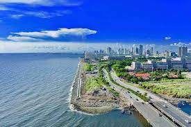

A quelques millions près
| Ville | Pays | Nombre d'habitants | image de comment c'est grand | |
|---|---|---|---|---|
| Tokyo | Japon | 42 000 000 | ||
| São Paulo | Brésil | |
36 315 000 | |
| Jakarta | Indonésie | 35 143 000 | |
|
| Manille | Philipines | 28 644 000 |  | |
| Clermont Ferrand | Auvergne | C'est une blague, c'est pas dans le top en fait | ||